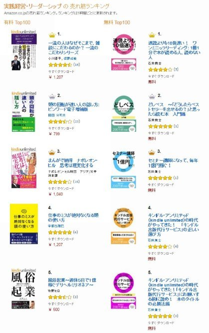

| どしプチ ～どうしたら、電子書籍でプチリタイヤできるの？ と思ったら読む本 | |
| 石井貴士 | |
| kabushikigaisyakokorocinderella (2016) | |
■プチリタイヤ引退から８年。電子書籍でプチリタイヤできる時代がやってきた！
はじめまして、という方もいるかもしれませんね。
作家の石井貴士と申します。
プチリタイヤ・プロデューサー石井貴士、と言ったほうが、覚えている方もいるかもしれません。
「石井貴士？ 知らないなあ」という方もいらっしゃると思いますので、簡単に自己紹介をさせてください。
元々は長野県で、アナウンサーとして５年間活動していました。
その後、独立して、（株）ココロ・シンデレラを起業。
２００３年９月に、まぐまぐから発行したメールマガジン『何もしないで月５０万円！幸せにプチリタイヤする方法』が大ブレイクをして、一時は購読者６万人のメールマガジンになったことがあります。
プチリタイヤの会員数は２０００人と、２００４年９月～２００８年８月までの丸５年間で、起業家組織としては、日本最大規模だと言われていた時代があります。
２００８年８月に起業家組織は解散し、起業コンサルタントからも引退して、作家活動・セミナー活動を中心とする日々を送りました。
２００８年８月に出版した『本当に頭がよくなる１分間勉強法』（中経出版）は、おかげさまで、５７万部を突破し、２００９年度の年間ベストセラー１位（ビジネス書 日販）を獲得しました。
現在は、６４冊。著作の累計は２００万部を超えており、作家業を中心に日々を送っています。
プチリタイヤからは完全に引退していたのですが、そんななか、電子書籍を使えばプチリタイヤできるということが、わかってしまったのです。
わかってしまった以上、私がお伝えすべきだと思い、こうしてペンを執っている次第です。
■２００８年９月～現在までで、状況は大きく変わった。電子書籍の参入タイミングが、ついにやってきた。
私が引退してからと言うもの、案の定と言いますか、怪しいコンサルタントの方は、とても増えたようです。
「楽して儲かる！」「何もしないで儲かる」といったうたい文句も、当たり前のように目にするようになりました。
「お金持ちになりたい」というのは、純粋な気持ちです。
否定されるものではなく、全面的に肯定されるものです。
ですが、その気持ちが純粋ならば純粋なほど、怪しい人にだまされてしまうという現実が、繰り返されてきました。
本来は、実績があり、きちんとした人が物事を教え、まじめな生徒がメソッドを学ぶのが当然のはずです。
ですが、現在は、実績もなく、怪しい人が、怪しいうたい文句で人を集めて教材を打ったり、セミナーをしたりというのが、余りにも当たり前になっています。
「だから、石井さんに教えてほしいんです」という方は多かったのですが、お金儲けメソッドのようなものを教えてしまうと、ギラギラしたお客さんばかりが集まってしまうので、今まで躊躇していました。
そんななか、「あ。こういうやり方ならば、いい人ばかりを集めながら、お金を稼ぐ方法を伝授することができるな」ということが、ひらめいたのです。
■電子書籍を使えば、プチリタイヤできる。
「こうすればあなたも電子書籍が出せますよ」
「電子書籍を使って、儲けましょう」
そういった怪しいコンサルタントが、案の定、出て来ています。
何が怪しいのか。
そう。彼らは、作家としての実績がほとんどないのです。
村上春樹先生が教えるわけでもなければ、東野圭吾先生が教えるわけでもない。
紙の書籍を出した実績がほとんどない人ばかりが、電子書籍の書き方を教えようとしているのです。
紙の書籍を出した実績があるとしても、たいていは１０冊以内だった李、１０万部以上を出したことがある電子書籍のコンサルタントばかりです。
売れる本が出せない人が、電子書籍ならベストセラーが出せると言って、人を集めているわけです。
「まさか、お客さんが集まるわけがないだろう」と思っていたら、そういう人のところにも、電子書籍を出したいという人が、大勢集まっているようなのです。
それを見て、私が立ち上がらなければいけないと思いました。
なぜなら、売れない著者から本の書き方を教わるのは、あまりにもかわいそうだからです。
紙の本でも売れるようなきちんとしたコンテンツを電子書籍化してこそ、売れる本になるのです。
２軍選手に教わるよりは、現役バリバリの１軍選手に教わったほうが、あなたは売れる作家になれるはずです。
自分で言うのも何ですが、私の作家としての実績は、
・年間ベストセラー１位（２００９年 ビジネス書 日販）
・作家デビュー１３年目。（２００３年１１月１０日デビュー）
・６６冊の本を出版。（２０１５年度も８冊出版）
・重版率は、５０％前後。
・１０万部以上の本は、３冊。（１分間勉強法、図解１分間勉強法、１分間英単語）
・著書累計２００万部。
となっています。
もちろん、私以上に実績がある著者の方は存在します。
もし、そういう方に出会うことができ、あなたが教えていただけるのであれば、そういった方にお願いするのは、とても正しいことです。
ですが、売れた実績がない方から、あなたがアドバイスをもらおうとしているのであれば、「ちょっと待ってください」と言いたくなります。
あなたが、変なアドバイスを受けて、内容がひどい電子書籍を出してしまったら、作家として信用を失います。
作家は、信頼がすべてです。
１冊本を読んで、「この著者はつまらないな」と思われたら、２度と買ってもらえません。
どの１冊を読んでも、「この著者は素晴らしい」と思っていただけて初めて、作家としての実績を積み上げることができるのです。
電子書籍で、何もしないで月５０万円を稼ぐことは、あなたにもできます。
ただ、一度でもつまらない本を書いてしまい、信頼を失ったら、作家として終わりです。
そうなる前に、あなたと出会えてよかったです。
実績ある作家として、あなたがダークサイドに落ちずに、正しい作家の道への一歩を踏み出していただけたら、幸いです。
（株）ココロ・シンデレラ 石井貴士
【特別動画セミナーはこちら】
http://www.kokorocinderella.com/kindleputi/kindle1.html
目次
■参入理由１ 、 i-phone6 s の登場で、電子書籍市場がついに爆発したから。
「電子書籍でプチリタイヤできるだって？ 電子書籍は稼げないって聞いたことがあるぞ」
そういう方もいるかもしれません。
確かに、２０１５年９月までは、そうでした。
電子書籍と言っても、キンドルリーダーや、楽 天 kob o を持っている人も、少なかったからです。
キンドルが日本に上陸したのが、２０１２年１０月。
３年経過して、地ならしが完了しました。
そんなときに発売されたのが 、 i-phone6 s でした。
２０１５年９月２５日のことです。
高機能で、かつ電池の持ちが長いスマートフォンが、やっと出始めたのです。
私自身、電子書籍には当初は否定できでした。
キンドルリーダーを持ち歩くのも面倒くさかったですし、キンドルのアプリをダウンロードしても、すぐに電池がなくなってしまったからです。
そんななか 、 i-phone6 s が２０１５年に発売されたのです。
ついに、キンドルのアプリの出番がやってきました。
電子書籍の参入タイミングがついにやってきたのです。
■参入タイミングは、２０１８年１０月までがベスト！
キンドルの成長カーブを見てみましょう。
２０１２年１０月に、日本上陸。
２０１５年９月２５日 に i-phone6 s が発売。
ということは、導入期前半はちょうど３年だったということになります。
導入期後半はいつか。
２０１５年１０月～２０１８年１０月。
なので、この３年間の時期に参入するのが、一番いいということになります。
それ以降、電子書籍が成長期に突入します。
一番最適な参入タイミングは、２０１５年１０月から、２０１８年１０月。
２０１８年１０月から２０２１年１０月でも、まだまだ行ける。
それ以降だと、参入には遅いかなというのが、私の雑感です。
結論としては、２０１８年１０月までに電子書籍を出しまくり、安定した地位を築いておけば、当面、何もしないで月５０万円の収入になってもおかしくないということになるのです。
■楽天で１位を獲得！ 『本当に頭がよくなる青ペン学習法』（ソフトバンククリエイティブ）
実は、楽天で電子書籍を出版して、楽天の電子書籍ランキングで１位を獲得したことがあります。
３日くらいは継続したと、記憶しています。
２０１５年１１月のことです。
まさに、参入タイミングドンピシャで、電子書籍を出しました。
（２１６円のところを、９９円セールを行いました）
おかげさまで、ほぼ何もプロモーションをかけずに、勝手にランキングが上がり、数千ダウンロードされることができました。
ただ、これは、出版社からの依頼があり、電子書籍描き下ろしとして書いたものなので、私の印税は、通常の書籍の場合とほとんど変わりません。
個人で出版していたら、１００万円以上の印税収入にはなっていたのは確実です。
この本で、私がプロモーションゼロで１位を取れたことで、電子書籍の攻略法が見えてきました。
キンドルでも電子書籍を出したところ、カテゴリランキング上位を独占するということも、現実になりました。

電子書籍は、やり方を知っているか知らないかで、まったくダウンロード数も変わってきてしまうのです
■電子書籍の市場規模は、３年で２倍に！
矢野経済情報研究所のデータによれば、電子書籍市場は、
２０１２年...７１０億円
２０１３年...８５０億円
２０１４年...１０５０億円
２０１５年...１３２０億円（推計）
２０１６年...１５５０億円（推計）
２０１７年...１９１０億円（推計）
とされています。
２０１４年度の１０００億円が、２０１７年までの３年間で２倍になっている計算になります。
３年で２倍になる市場など、ほかにあるでしょうか。
２０１５年９月までは、電子書籍が売れたとしても、ほとんどお金になりませんでした。
ランキングで１位でも、印税が１００万円にもならなかったのが現状です。
ですが、これからの時代であれば、１冊電子書籍を出すだけで、有名作家ならば５０万円スタート、有名ではない人でも、１万円分くらいは、毎月売れる可能性が出てきたのです。
■参入理由２、有名作家が、まだ電子書籍に参入していないから。
有名作家は、出版社から原稿執筆の依頼が来ます。
紙の本で出版し、同時に電子書籍化されるというのが、売れている作家にとって、ごく当たり前の流れです。
プロモーションを出版社が代わりにやっていただけるので、著名作家が、個人で電子書籍を出す意味は、ほとんどないのが現状です。
いや、電子書籍を出している暇がないというのが、本当のところでしょう。
私自身、常に２冊～４冊は、出版社からの執筆依頼がある状態が続いていました。
出版社の依頼にお答えするのでいっぱいいっぱいで、電子書籍を書く時間がないのが、ある程度以上売れている作家の日常です。
そんななか、私には革命的なことが起こりました。
執筆スピードが、１か月で１冊くらいだったのが、１０日で１冊、７日で１冊、５日で１冊など、格段に書くスピードが上がったのです。
同時に、出版が決まっていたはずの３冊分の原稿が、出版不況もあって、出版されないという事態になったのです。
すでに企画会議に通過していたのに、ボツになったのです。
「もしかして、これは電子書籍に参入してみろという神のお告げかもしれない。きっと、電子書籍でプチリタイヤする方法を編み出せということか」
と、神の啓示が降りたのです。
■有名作家は、いずれこぞって、出版社を通さないで出版するようになる。
今は、有名作家は、電子書籍を出す意味はほとんどないので、参入している人はほとんどいません。
ですが、もし、有名作家が電子書籍を安い価格で出すようになれば、素人は太刀打ちができなくなります。
東野圭吾先生は、電子書籍は出さないと決めていらっしゃるそうです。
なぜなら、もし自分が電子書籍を販売してしまったら、全国のリアル書店がつぶれてしまうかもしれないからです。
東野先生は、トップ作家として、書店を守るために、電子書籍を出さないということです。
ということは、逆に考えてみてください。
東野圭吾先生クラスの作家が、全員、電子書籍に参入したら、どうなるでしょうか。
書店よりも電子書籍のほうが安いので、電子書籍に流れる読者ばかりになり、紙の本の需要そのものが大幅に減ることが予想されます。
ということは、今は、有名作家も、書店も、出版社も、なるべく電子書籍一辺倒にならないほうが、３方が得をするという状況になっているということです。
とはいえ、きっと近いうちに、有名作家が、電子書籍に参入してきます。
こぞって参入してくるとしたら、２０１８年１０月前後ではないかと、私は読んでいます。
となると、それまでに参入しておいて、確固たる地位を築いていたら、有名作家と同じ土俵に立つことができ、あなたの電子書籍は、大ブレイクする可能性も、あるというわけなのです。
■ライバルがいないうちに、地位を確定させる。
ビジネス書作家は、定価１２００円で、初版６０００部だとすると、印税が７２万円という計算です。
もちろん、初版１万部の時もありますが、たいていは初版６０００部～８０００部が通例です。
価格も１４００円、１５００円の時もあります。
だいたい、１冊本を書くと、初版印税で７２万円～１００万円の初版の印税収入があるのが相場だと思ってください。
重版がかかれば、さらに印税が増えていきます。
労力を考えると、有名作家で電子書籍に手を出すのは、まったく意味がない行為でした。
紙の本のほうが、印税も多いわけですし、多くの方に呼んでもらえるわけですから。
ですが、市場が拡大して、有名作家であれば、本を出すだけで１００万円以上からスタートする世界になったら、どうでしょう。
１冊書いて１００万円、２００万円スタートになったら、どうでしょう。
最近の事例では、海猿の著者の方が、電子書籍セールをしたところ、１億３０００万円の印税収入があったことで話題になりました。
有名著者がこぞって参入する前に、電子書籍デビューをしておけば、あなたも勝ち組に入ることができるのです。
■電子書籍を出すだけで、７つのゼロが手に入る！
「電子書籍かあ。でも、出すのは大変そうだし、出してからも、大変かもしれない」
そう考えている方もいるかもしれません。
ですが、電子書籍を使えば、あなたはとても楽な状態を作り出すことができます。
やればやるほど大変になっていくビジネスモデルではなく、頑張れば頑張るほど楽になるビジネスモデルで独立すれば、ビジネスはうまくいくのです。
サラリーマンは、やればやるほど、出世して部長になってしまい、さらなる残業が待っています。
プチリタイヤのビジネスモデルを使えば、頑張れば頑張るほど収入が増え、することがなくなります。
あなたも、電子書籍を使ったプチリタイヤモデルを持つことができれば、多くの人を喜ばせて、その対価としてお金をいただくことができ、さらには毎日、楽になれるのです。
主婦の方でも、子育てをしながら、月に勝手に５０万円が振り込まれたら、とても生活が楽になるはずです。
老後の生活も、プチリタイヤモデルを使えば、年金のほかに、何もしないでお金が振り込まれる日々が待っています。
多くの人を喜ばせ、あなたも楽になれるのがプチリタイヤなのです。
１、事務所ゼロ
まず、電子書籍を書くだけなので、事務所を構える必要がありません。
家賃１０万円などがかかってしまえば、それだけランニングコストがかさみます。
水道代、ファックス代なども、必要になって来るでしょう。
必要なのは、パソコンだけです。
「パソコンを買わないで、電子書籍を出すことは可能ですか？」と言われたら、さすがに無理です。
パソコンは、お金がなかったとしても、なんとしてでも買いましょう。
商売道具なので、ここだけはケチっても意味がありません。
マックでもウィンドウズでも、どちらでも大丈夫です。
あ。使用するのは、「ワード」というソフトなので、「ワード」を買う（もしくは、月額１０００円前後でレンタルする）必要は、あります。
出費と言えば、このくらいです。
事務所が必要ないので、固定費はかかりません。
あなたの頭脳が資本です。
本をたくさん買って勉強することは大切なので、書籍代はかかるかもしれませんが、事務所を構える必要は、ないのです。
２、出社ゼロ（通勤時間ゼロ）
書く場所も、どこでも構いません。
おしゃれなカフェでもいいですし、自宅でも構いません。
なので、出社することがないのす。
満員電車に何時間も揺られる必要がありません。
東京にいても、大阪にいても、地方にいても、海外にいても、文章を書くことは可能です。
プロの作家の場合は、東京に住むことが基本とされています。
というのは、出版社の９割が東京に集中しているからです。
藤子不二雄先生が、多摩川の向こう側に自宅を買った時に、編集者から、「多摩川の向こうに住んでいる作家で、成功した作家はいません。なので、藤子不二雄先生が第一号というわけですね」と言われ、藤子不二雄先生でさえ、「多摩川の向こうに家を買ってしまうなんて、勝負しすぎたかな」と後悔したという逸話があります。
私も、都心に住んでいますが、編集者とのやり取りがあるので、都心から動けないのが作家の宿命とも言われています。
小説家は熱海に住んだりしている方もいらっしゃいますが、私の場合は特にビジネス書作家なので、都心に住まなければいけないというわけです。
とはいえ、出社はせずに、自宅で文章を書いています。
たまに気分転換で、カフェで書くこともありますが、海外に行ったとしても、執筆はできるというのが、作家業の強みなのです。
３、労働ゼロ
いわゆる肉体労働はしません。
もちろん、作品が軌道に乗るまでは、会社員などをしながら働く必要がありますが、月の収入が５０万円以上が継続して入ってくるようになれば、会社はやめることができます。
月の収入を５０万円以上にしたい、１００万円がいいんだということになれば、もちろん働く必要はありますが、好きな時に働くことができるのが、プチリタイヤのビジネスモデルです。
もう、無理に働くことは、なくなるのです。
本を書くのは大変な労働だと考える人もいるでしょうが、それは、売れない本を書くから大変なのであって、売れる本を書くのは、とても楽しいです。
「これを書いたら１００万円だぞ。わあい」と、楽しい気持ちでいっぱいになるくらいの売れる本を書けばいいだけの話です。
そのためには、勉強は、日々行う必要があります。
私自身、年間１０００冊の本を読みますが、作家として当然です。
労働はゼロだが、勉強は毎日している状態が、プチリタイヤの状態だと思っていただければ、ありがたいです。
辛い労働ではなく、楽しいアイデアを現実にしていくだけの毎日が、あなたには待っているのです。
４、在庫ゼロ
電子書籍なので、在庫もありません。
出版社を経営したら、在庫の本が倉庫にあふれてしまいますが、電子書籍であれば、キンドルなどにアップロードするだけなので、在庫を抱えるリスクもありません。
私自身、かつて「せっけん」を販売したことがあり、多くの在庫を抱えました。
高級石鹸を作ろうと、５００万円で、サンプル１万個、商品２０００個を作成しました。
思いっきり原価をかけて、世界最高峰のせっけんを作ることに成功したのです。
原価だけでも２０００円以上するせっけんなど、聞いたことがないはずです。
にもかかわらず、大失敗しました。
発売直後に薬事法が改正され、オリジナル石鹸を売るには、厚生労働省の許可を５年くらいかけてとらなければいけなくなったのです。
突然、販売中止になり、今では、家族で使うだけという、悲しい結果になりました。
会社が倒産する理由は、在庫を抱えるからです。
在庫がなければ、すぐにほかの業態に転換することもできますが、在庫があると、在庫を売ろうと必死になります。
必死になるので、必死さが変に伝わってしまって、余計に売れなくなるというスパイラルが待っています。
在庫がないビジネスを始めるというのは、ビジネスを始めるときの基本でもあるのです。
５、リスクゼロ（初期投資、ランニングコストが限りなくゼロ）
電子書籍を出版するのに、リスクはありません。
出店料がかかるわけではないので、アップロードするだけです。
無料で出店できるので、楽天に店舗を出すようなインターネットのショッピングモールともわけが違います。
アマゾンのキンドルだけではなく、楽天 の kob o など、ほかの電子書籍販売スタンドも、無料で出すことができます。
以前は、アマゾンはアメリカに税金を払うための銀行口座を設けなければならないという時代があったようですが、それも今は、聞かなくなりました。
なので、本当にリスクがゼロになったわけです。
売れたらお金が入り、売れなかったらお金が入らない。
ただ、それだけです。
本が売れる理由は、あなたの想像を超えたところにあります。
もしかしたら、ほかの売れている電子書籍を買った人が「ついでにこちらもいかがですか？」という表示で、何気なく買うかもしれませんし、なんとなく１００円だから買ったという人も、現れます。
有名人が買って、ブログで紹介してくれる可能性もゼロではありません。
本を置いておくだけで、ノーリスクで突然売れるかもしれない可能性を、無料で買うことができるのが、電子書籍の世界なのです。
６、顧客との接触ゼロ
顧客との接触ゼロとは何かというと、「お客さんから代金を頂く瞬間に自社の人間を介在させない」ということです。
これにより、アルバイトや社員にお金を横領させるリスクもゼロになります。
横領だって？ そんなに悪いことをする人がいるはずがない」という方もいるかもしれません。
ですが、私が知っているカラオケボックスは、アルバイトの横領でつぶれたのです。
お客さんからお金をいただいておいて、レジにお金を入れない」という単純な手口で、カラオケボックスがひとつ、つぶれたという事実があります。
実際のところ、会社が倒産する２大理由は、
１、社員の横領
２、右腕の離反
この２つです。
２つのうちの１つをなくすことができるのですから、読者からお金をいただくことを、アマゾンや楽天に代行してもらうことは、とても重要なことなのです。
スーパーは、レジ打ちの人件費が、とても高いのです。
お金をいただくときに、人間が介在しなければ、自動販売機のように、チャリンチャリンとお金が入ってくるようになるのです。
７、社員ゼロ
電子書籍であれば、自分でアップロードするだけなので、社員を抱える必要がありません。
月給２０万円を払う必要もなければ、ボーナスを払う必要もありません。
社員がうつ病になることもなければ、社員が出社拒否をすることもありません。
リーダーシップを発揮する必要もなければ、会議をする時間もなくなります。
私が会社員時代に、嫌だったのは、会議があったことです。
別に、リーダーが決めたことを、紙に書いていただければよかったのに、なぜか、決定する場に、社員が呼ばれるのです。
そんな暇があったら、ほかのことをするのにと、いつも思っていました。
社員が一人いれば、会議をする時間がとられます。
会議をする時間は、とてももったいないです。
社員が１人いても、２人いても、３人いても、会議が発生します。
１、自分で電子書籍を２万字書く。
２、キンドル出版代行サービスにお願いする。
このツーステップで、どんどん資産が増えていくのです。
■電子書籍は、置いておくだけで、お客さんが集まる！
電子書籍は、一度アップロードしてしまえば、ほぼ永久に、キンドル上に存在することになります。
永続的な収入を、１冊、１冊と、増やしていっているようなものです。
決して減らずに、増え続ける資産。
それでいて、アマゾンに毎月お金を払うわけではなく、ページビューによって、お金が支払われます。
ＫＤＰ（キンドル・ダイレクトパブリッシング）に登録されれば、自動的に、キンドル・アンリミテッドに登録されます。
そうすれば、ページビューに応じて、お金がいただけるのです。
ページビューに応じて、お金をいただけるだけではなく、電子書籍の巻末に、リンクを貼っておけば、自動的にお客さんが集まる流れができます。
私の場合は、１日のダウンロード数が１００冊～２００冊です。
ということは、新たに、石井貴士のことを知る人が、毎月３０００人～６０００人増えているということです。
一度、電子書籍をアップロードしてしまえば、そのあとずっと、お客さんが来る流れができるのです。
まさに、プチリタイヤと電子書籍の愛称は、抜群なのです。
■メールマガジンよりも、電子書籍のほうが、楽だ。
メールマガジンは、メールアドレスを登録していただいた後、毎日のように配信しなければいけません。
その分、大変です。
ですが、電子書籍であれば、一度アップロードしてしまえば、手を加える必要はないので、あなたはその分、楽をすることができます。
メールマガジンを配信していたが、文章を書くのが毎回大変なので、やめてしまった。
ブログを書いていたが、更新が大変なので、やめてしまった。
こういう方は、多いはずです。
ですが、電子書籍であれば、一度書き終えれば、もう何もしなくていいわけです。
メールマガジンで、挫折した。
ブログで挫折した。
フェイスブックも挫折した。
そんなあなたも、電子書籍であれば、２万字書けばいいだけなので、飽きる前に、原稿を書き終えて、何もしなくていい状態が作れるのです。
■電子書籍の最適文字数は、２万字だ。
電子書籍かあ。書くのは大変なんだろうな」と思う方もいるでしょう。
電子書籍の最適な文字数は、２万字です。
１万字だと、少ないというクレームが来ます。
１５０００字でも悪くはありませんが、せっかく、ページビューに応じて課金されるのですから、もったいないです。
３万字以上になると、読むのが大変になり、読者にとって負担になります。
２万字だと、読者も満足する文字数なので、理想的です。
ワードで文章を書くと、左下の部分に、現在の文字数が表示されます。
その文字数で、ちょうど２万字を目指しながら、書くのです。
１日５０００字ならば、４日で。
１日２５００字ならば、８日で１冊の本が書き終わります。
もちろん、書き終えた後には、最初から読み返すという「推敲（すいこう）」作業に１日は欲しいところです。
５日から１０日で、１冊を書き終えることができます。
メールマガジンは、継続的に書き続けなければいけませんが、電子書籍は、１冊アップロードしたら、ひとつの仕事が完成します。
どんどん資産が増えていくのが、電子書籍なのです。
■執筆に集中する人が、成功する。
キンドル・アンリミテッドの登場により、電子書籍で本を読もうという人が、どんどん増えていっています。
となると、あなたの取るべき行動は、いかに執筆に集中して、ほかの作業を、第３者に任せることができるか？ がカギになってきます。
「どうして、石井さんは、キンドルで多くの本を出せるのですか？」と言われたら、執筆に集中して、ほかのことをスタッフに任せているからです。
石井貴士は、とにかく２万字を書くことに集中する。
あとは、弊社のスタッフに任せるだけで、１冊ができるという体制ができあがっているからです。
そう。
執筆すること以外は、何もしない。
これが、キンドル作家として成功する必勝法です。
ＫＤＰ（キンドル・ダイレクトパブリッシング）に自分で、ウンウンうなりながら登録しようとしている人がいますが、そういった作業は、キンドル出版代行サービスに任せれば、代わりにやってもらえます。
表紙も、もちろん、最初の１冊に関しては、なんとなくのイメージくらいは考える必要がありますが、キンドル出版代行サービスに任せてしまえば、装丁作家（本の表紙を作成するデザイナー）も、代わりに探してもらえます。
本の表紙のデザインの勉強を１からするのではなく、プロにお願いしたほうが、早いです。
キンドルで本を出すので大変な作業の一つが 、 e-pu b 化という作業です。
イーパブと読むのですが、これは、キンドルで表示されるときに、文字がずれないようにしたり、レイアウトをきちんとするためのデジタル上の作業のことです。
目次から、リンクを貼って、それぞれの小見出しに飛ぶようにしたりする作業も、自分でやったら、時間がかかります。
そういった余計な時間を、すべてほかの人に任せられる人が、キンドルで本を出して、成功できる人です。
あなたのすべきことは、２万字の原稿を書くこと。
それだけです。
この部分は、ほかの人に任せるわけにはいきません。
ですが、それ以外のことを任せられる体制を作ることで、あなたは執筆に専念することができます。
弊社では、キンドル出版代行サービスを行っていますが、いかに作家に負担がかからないか？ という作家目線でのサービスになっています。
しかも、「高額ではない」というところがセールスポイントなので、ぜひ一度、ホームページだけでも、ご覧いただければと思います。
http://www.kokorocinderella.com/kindle
無料動画セミナー「キンドルで成功する７つの必勝法」（４４分）を、ご覧くださいませ。
■先にやった人が、成功する。
キンドル・アンリミテッドは、早い者勝ちの世界です。
あなたがやらなければ、誰かがやります。
今後、住宅販売でも、キンドル・アンリミテッドを利用する会社が出てくるでしょう。
『東急田園都市線 二子玉川園で一戸建てを買う！』
『東急田園都市線 たまぷらーざで一戸建てを買う！』
『東急田園都市線 あざみ野で一戸建てを買う！』
『東急田園都市線 青葉台で一戸建てを買う！』
という風に、沿線の、さらには駅ごとに電子書籍を作れば、ほかの不動産会社よりも、優位に立てます。
無料で、いや、ページビュー課金でお金をいただきながら、パンフレットを作ることができます。
紙のパンフレットは、更新するたびに、印刷コストがかかったり、チラシであれば、新聞に折り込むときに、お金がかかります。
ですが、電子書籍であれば、印刷コストはゼロです。
住宅も、電子書籍から買う時代が、もうすぐそこに来ているのです。
■不動産会社であれば、年に４回改定を行うだけでいい。
『東急田園都市線 二子玉川園で一戸建てを買う！ ２０１７年冬号』
『東急田園都市線 たまぷらーざで一戸建てを買う！ ２０１７年冬号』
『東急田園都市線 あざみ野で一戸建てを買う！ ２０１７年冬号』
『東急田園都市線 青葉台で一戸建てを買う！ ２０１７年冬号』
を、２０１６年の１２月に出すとします。
２０１７年の３月には、春号として、次のようにすればいいのです。
『東急田園都市線 二子玉川園で一戸建てを買う！ ２０１７年春号』
『東急田園都市線 たまぷらーざで一戸建てを買う！ ２０１７年春号』
『東急田園都市線 あざみ野で一戸建てを買う！ ２０１７年春号』
『東急田園都市線 青葉台で一戸建てを買う！ ２０１７年春号』
こういった形で、電子書籍で、すべての沿線のすべての駅を網羅してしまえば、ほかの不動産会社をごぼう抜きにすることができます。
あざみ野であれば、あざみ野駅のそばに、不動産会社の店舗があって、「こちらにお立ち寄りください」としてあるのは、今は当たり前です。
ですが、不動産会社に入るのは、勇気がいります。
「だまされたらどうしよう？」
「変な物件を紹介されたらどうしよう？」
という不安が常にあります。
そんななか、電子書籍であれば、無料でダウンロードできます。
電子書籍を見て、信頼できる不動産会社に足を運ぶのが、当たり前になるでしょう。
ほかの会社に先を越されるよりも、あなたの会社がやるかどうかが、ポイントです。
電子書籍の登場で、業界地図がガラリと変わるかもしれないのです。
■ネイルアーチストも、電子書籍から選ばれる。
ネイルアーチストが、ネイルカタログを電子書籍として出版したら、どうなるでしょうか。
「こんなネイルにしてほしい」というお客さんから、申し込みがあるはずです。
もちろん、地方に住んでいたら、行くのは難しいですが、首都圏に住んでいたら、このネイルアーチストの方にやっていただきたいという方は、お客さんになりたいと思うはずです。
無料で、お客さんがどんどん集まってくる流れが、電子書籍を使えばできます。
あなたがボヤボヤしていたら、ほかの人が電子書籍を出すだけです。
一度電子書籍をアップしてしまえば、あとは、何もしないで、お客さんが来る流れができます。
やるかやらないかで、やらないという選択肢は、ないのです。
■税理士さんが、億万長者になる時代がやってきた。
税理士さん、月額で顧問報酬をいただくビジネスの方は、突然、ゴールドラッシュが来たことになります。
『中小企業、節税の秘訣』
『２０００万円の利益を、一瞬でゼロにする節税法』
『なぜ、あの会社は税金を払っていないのか』
といった電子書籍を５０冊出したら、どうでしょう？
無料でダウンロードし放題なわけですから、全国から、経営者の方がダウンロードするはずです。
ぜひ、顧問税理士になってほしい」という企業が１０社現れたら、毎月５０万円。
１００社現れたら、毎月５００万円の顧問報酬になります。
こうなると、一気に、全国展開をしたほうがいいことになります。
「なぜ、税理士じゃなかったんだろう」と悔やむ人は多いかもしれませんが、月額の顧問報酬ビジネスの方は、無料でお客さんが集まる時代が、いきなりやってきたのです。
■弁護士さんも、全国展開できる。
弁護士さんも、
『顧問弁護士の正しい選び方』
『訴訟を受けたら、最初に読む本』
『負ける訴訟に、勝つ方法』
といった電子書籍を５０冊出せば、どうなるでしょうか。
士業の方というのは、今まで本が出せませんでした。
というのも、士業の方が書いた本は、売れないからです。
あなたも、士業の方がベストセラーを出しているというのは、聞いたことがないはずです。
『だからあなたも生き抜いて』くらいなものです。
極道の妻で、弁護士になるくらいのプロフィールがあって、やっと売れるというのが、士業の方のケースです。
なので、出版社の企画会議でも、著者が士業の方であるというだけでも、通らないことは多かったのが実際のところでした。
ですが、キンドルであれば、何冊でも出し放題です。
となると、全国からお客さんが殺到する可能性が、やっと出てきました。
税理士、弁護士の方は、やっと大きく稼げる時代が到来したのです。
■成長カーブの３段階によって、成功法則は違う。
よく、すでに成功している人が、「謙虚でいることが大切です」と言ったりします。
それを真に受けて、「そうだ。謙虚な人間になることが大切なんだ」と思ってしまう人がいます。
違います。
ステージによって、傲慢でいることが大切な時期もあれば、謙虚であることが大切な時期もあるのです。
事業は、
１、導入期
２、成長期
３、成熟期
の３段階に分かれます。
導入期で大切なのは、トライアンドエラーを、数多くすることです。
ブレイクしていないときなので、失敗も小さいもので済みます。
この時期は、「必ず自分は成功するぞ。俺様が一番偉い」と、傲慢でいることが大切です。
成長期に入ると、とにかく受注が増えます。
「売って売って、売りまくれ」がキーワードです。
なので、「金だ！ 金だ！」と、金の亡者のように、お金を追い求めることで、成功が大きくなります。
成熟期では、すでに成功している状態なので、ほかの会社と提携したり、より成功している方に助けていただいたり、お客様とも、真摯に向き合うことで、次のブレイクが生まれます。
つまり、謙虚であることが大切になるのです。
すでに成功者の方は、成熟期の状態にあります。
だから、謙虚になりなさいと、あなたにもアドバイスをしてしまうわけです。
ですが、あなたがまだ起業していない段階だったり、ビジネスがブレイクしていない段階ならば、「自分の才能に対して、傲慢になること」が大切です。
「俺様は誰にも負けないぞ」と思うことで、ブレイクが生まれるステージです。
「石井さんは、どんな人かわかりません。ものすごく謙虚だったり、ものすごく傲慢だったりします。どちらが本当の石井さんなのですか？」と言われたことがあります。
ステージによって、使い分けています。
最近は、新たに小説に取り組んだり、漫画の原作に取り組んだりしています。
当然、始めたばかりなので、ブレイクもしていなければ、連載も持っていません。
ということは、「傲慢な人格」こそ、成功へのカギという時期です。
つい数年前までは、謙虚な人格が前面に出ていましたが、ビジネスで成功するには、３つの人格をローテーションする必要があります。
傲慢な人格→金の亡者→謙虚な人格者 です。
今の石井貴士は、傲慢な人格であろうと、努力しています。
もし、ブレイクしたら、金の亡者のような人格になろうとします。
ブレイクが確定したら、謙虚な人格者になります。
成功するためには、人格も意図的に変えていく必要があるのです。
■キンドルは、今はまだ導入期だ。
キンドルは、まだ導入期です。
「 Kindl e って何ですか？」
「キンドル・アンリミテッドなんて、聞いたこともありません」という人が、まだ大勢います。
まだキンドルも、当然ながら、キンドルのサービスの一つである、キンドル・アンリミテッドも、まだあまり知られていません。
ですが、確実にそこにはすでに多くの読者が存在しています。
電子書籍の市場規模も、毎年３００億円づつ伸びています。
電子書籍は、必ず成長期を迎える日が来ると言われているので、導入期のうちにトップをとってしまえば、そのまま、トップを独走できます。
これほどのブームは、めったに来ません。
１２年に１度の、お金持ちになれるチャンスが、キンドルなのです。
■２００３年～２００４年のメルマガブーム以上の波が、やってくる！
２００３年～２００４年は、メールマガジンのブームでした。
媒体は、まぐまぐというメールマガジン配信スタンドです。
まぐまぐでメールマガジンを配信するだけで、無料でお客さんが集まり、ビジネスが立ち上がるという時代でした。
私自身、２００３年９月の一カ月で、７６００人の方にアドレスを登録いただき、その月から、月商５００万円が１年以上続きました。
ビジネスが、ゼロからいきなり軌道に乗ったのです。
今回は、１２年経過して、２０１６年８月に、キンドル・アンリミテッドができました。
無料で、誰でも電子書籍が出せます。
電子書籍の中に、あなたのホームページ の UR L も貼って大丈夫ですので、読者をあなたのホームページに誘導することができます。
メールマガジンブームが、まぐまぐ。
電子書籍ブームは、アマゾンです。
企業の規模が、１０倍は違いますので、メールマガジンよりも１０倍すごいことになるかもしれないというのが、今回の電子書籍ブームです。
メールマガジンも、参入するのにお金はかかりませんでした。
今回の電子書籍も、参入するのにお金がかかりません。
当時の私が、いきなり月商５００万円だったので、今度はいきなり月商５０００万円だったらどうしよう？ とは思うのですが、今はまだ、キンドルは導入期なので、そこまではいかないとは思います。
ですが、必ずや、とんでもないブームになると言われているのが、電子書籍です。
参入するのは、今がチャンス。
指をくわえてみているのか？
ノーリスクならば、電子書籍を出してみようと、重い腰を上げるのか？
決断は、あなた次第です。
ですが、あなたがやらなくても、ライバル会社は、必ず電子書籍に参入してきます。
やらなければ、負けてしまいます。
メールマガジンでプチリタイヤできる時代から、電子書籍でプチリタイヤできる時代へと、１２年たって、時代が巡ってきたのです。
せっかくなので、あなたが成功するお手伝いができたらなあと、願っています。
■電子書籍を使えば、あなたもプチリタイヤできる。
「電子書籍か。そんなツールもあるんだな」と、傍観者のままでは、あなたの人生は変わりません。
「そうか。電子書籍か。いっちょやってやるか」と自分が主人公になって最初の一歩を踏み出すことができる人が、人生を変えられる人です。
「文章なんて、自分には書けないよ」という方もいるでしょう。
でも、たいていの人は、大人になってから、プロの作家に文章を習ってはいないのです。
教わっていないのですから、できなくて当然です。
小学校の時代に、学校の先生から作文を教わったり、高校生の時に小論文は教わったことがあるかもしれませんが、その先生は、ベストセラー作家ではなく、ただの学校の先生だったはずです。
ならば、先生に習いさえすれば、文章は必ず上達するのです。
知っているか、知らないかだけで、先天的な才能は関係ないのが、文章の世界です。
これからの日本は、年金も払われないかも知れませんし、消費税も１０％、１５％と上がっていくだけです。
暗い未来が待っているかもしれないと、多くの方が思っています。
だからこそ、本を書くのです。
多くの人を勇気づけるために、本を書くのです。
つらいときに、本を読んで励まされたという方も多いと思います。
ならば今度は、あなたが本を書いて、多くの人に希望の光を与えればいいのです。
おそらく、この電子書籍を読んだことで、実践する人が多く表れるでしょう。
なかには、月５０万円どころか、月１００万円、月１０００万円の収入を稼ぎ出す、大ベストセラー作家も生まれるかもしれません。
私がビジネスをしているのは、「多くの人を勇気づけられるような、そんな人を大勢生み出すため」です。
石井貴士ひとりが頑張っても、世の中は変わりません。
私が一人でお金持ちになっても、つまらないんです。
それよりも、あなたが多くの人を勇気づけられる存在になり、あなたが１０００人、２０００人、１万人と勇気づけていただけたほうが、世の中が明るくなります。
そんな方が、この電子書籍を通じて１００人、１０００人、１万人と現れるようにと、この電子書籍を格安でご提供しています。
本来、普通の書籍を書いたほうがお金が入るにもかかわらず、あえてこの本をお金のためではなく書いた理由は、多くの喜びの輪を作り出したいからです。
あなたが生まれてきた理由。
それは、多くの人を幸せにするためです。
辛い思いをするために、この世に生まれてきたわけではないのです。
電子書籍なら、あなたにも書けます。
多くの人を幸せにする文章を書くのは、あなたなのです。
ここまで読んでいるあなたには、やる気があります。
ぜひ、そのやる気を、「自分だけが儲かればいい。つまらない内容で、人をだましてでも電子書籍で儲けてやる」という方向性ではなく、「しっかりした内容で、多くの人を勇気づけよう。喜びの対価として、月５０万円以上の収入をいただこう」という方向性に向けていただければ、私としてこれほどうれしいことはありません。
紙の本を出して、作家デビューするのは、今でも難易度が高いです。
ですが、電子書籍なら、あなたにもできるはずです。
ぜひ、喜びの輪の中に、飛び込んでいただければなあと願っています。
（株）ココロ・シンデレラ 石井貴士
追伸１
弊社では、「キンドル出版代行サービス」を行っています。
http://www.kokorocinderella.com/kindle
無料動画セミナー「キンドルで成功する７つの必勝法」（４４分）を、ご覧くださいませ。
追伸２
「キンドルでプチリタイヤしたい！」という方のために、「キンドルプチリタイヤ・マスタースクール」のホームスタディ会員も、募集しています。（格安です！）
石井貴士が講師を務めています。
無料動画セミナー「電子書籍を使って、成功する方法」～電子書籍の参入タイミングは、今だ！～（６０分）もご用意しています。
ぜひ、今すぐにアクセスしていただければ、うれしいです。
http://www.kokorocinderella.com/kindleputi/kindle1.html
【石井貴士公式サイト】
http://www.kokorocinderella.com/
（無料メルマガやブログを配信中）
【石井貴 士 Amazo n 著者ページ】
【石井貴 士 Youtub e チャンネル】
https://www.youtube.com/channel/UC1NoyV5DKqt8J1TeHib8bUg
【石井貴士のフェイスブック】
https://www.facebook.com/takashi.ishii.336
【石井貴士のフェイスブックコミュニティ】
【石井貴士ツイッター】
https://twitter.com/556cinderella
【キンドル出版代行サービス】
http://www.kokorocinderella.com/kindle/
【石井貴士のライン＠】
http://line.me/ti/p/%40ishiitakashi
【作家 石井貴士 プロフィール】
１９７３年愛知県名古屋市生まれ。私立海城高校卒。
代々木ゼミナール模試全国１位、Ｚ会慶応大学模試全国１位を獲得し、
慶應義塾大学経済学部に合格。
１９９７年。信越放送アナウンス部入社。
２００３年。（株）ココロ・シンデレラ を起業。
『本当に頭がよくなる １分間勉強法』（中経出版）は５７万部を突破し、
年間ベストセラー１位を獲得。（２００９年 ビジネス書 日販調べ）
現在、著作は合計で６４冊。累計２００万部を突破するベストセラー作家になっている。
―――――――――――――――――――――
所持媒体
メールマガジン「石井貴士３６５日語録」（２００３年～）
石井貴士公式オフィシャルブログ（２００９年～）
主な著作
『本当に頭がよくなる １分間勉強法』（中経出版）は、５７万部を突破。
年間ベストセラー１位（２００９年度 ビジネス書 日販調べ）
『図解 本当に頭がよくなる １分間勉強法』１６万５０００部
『ＣＤ付 １分間英単語１６００』１５万部 以上、３冊が１０万部超え。
『１分間英熟語１４００』（英単語・英熟語は、韓国版も発売）
『１分間英文法６００ 』( 水王 舎 )
『１分間東大英単語１２００』
『１分間早稲田英単語１２００』
『１分間慶応英単語１２００』
『１分 間 TOEI C テスト英単語２０００』
『１分間高校受験英単語１２００』 以上、英語関連書籍。
『１分間日本史１２００』
『１分間世界史１２００』
『１分間古文単語２４０』
『１分間古典文法１８０』
『１分間数学１・Ａ１８０』
『１分間速読法』
『１分間記憶法』
『１分間ノート術』
『１分間決断法』
『１分間読書法』
『１分間易入門』
など、１分間シリーズだけで、累計１５０万部を突破。
現在、累計６４冊。２００万部を出版。
【石井貴士の電子書籍：無料】
『アナウンサー物語』
https://www.amazon.co.jp/dp/B01KEXR9TC/
『速読よりも１０倍速い！ ワンミニッツリーディング』
https://www.amazon.co.jp/dp/B01LA6AKKM/
『作家になって毎年１億円稼ぐ』
https://www.amazon.co.jp/dp/B01KJBY4FG/
『セミナー講師になって、毎年１億円稼ぐ！』
https://www.amazon.co.jp/dp/B01LRA9YOY/
『キンドル出版代行サービスの正しい選び方』
https://www.amazon.co.jp/dp/B01KI1XSLS/
『キンドル出版代行サービスに、お願いする前に読め！ 本の表紙の必勝法編』
https://www.amazon.co.jp/dp/B01KFZ0G6C/
『キンドル出版代行サービスに、お願いする前に読め！ 本のタイトルの必勝法編』
https://www.amazon.co.jp/dp/B01KFZSHLS/
『どし無料（タダ）～「どうしたら、無料でお客さんを集められるの？」と思ったら読む本』
https://www.amazon.co.jp/dp/B01LXCN76A
『わたしたちこうして１冊１分になりました①』
https://www.amazon.co.jp/dp/B01J413O4E/
『わたしたちこうして１冊１分になりました②』
https://www.amazon.co.jp/dp/B01J33FOVO/
【特別動画セミナーはこちら】